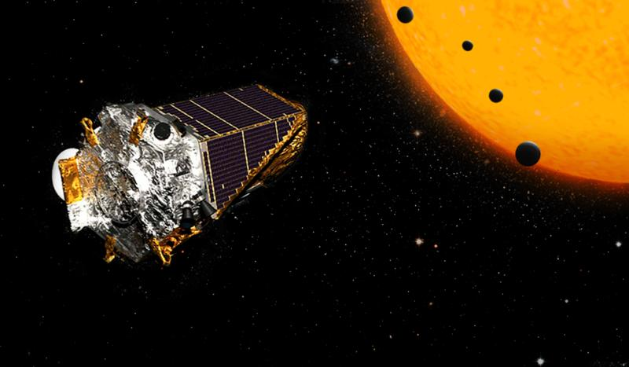

About
Hello, I'm Alper, an Artificial Intelligence Undergrad who is interested in scientific understanding of the world around us. I have a wide variety of personal interests ranging from digital art, music, to, most importantly, data science. My aspiration is to bring a scientific and multi-disciplinary perspective to projects I work on. In the long run, I want to be a Research Engineer or a Data Scientist.
Experience
Research Engineer - EYESOFT Bilişim Eğitim Yayıncılık İletişim ve Danışmanlık A.Ş.
Working on IR image processing solutions to build and design an eye-operated wheelchair solution for people with ALS or paralysis. Currently researching with the help of EyeTribe and Tobii EyeX Controller IR sensor packages to implement a PID-like algorithm that will account for inconsistent pupil motion for closer distances and angles.
Data Science Intern - EYESOFT Bilişim Eğitim Yayıncılık İletişim ve Danışmanlık A.Ş.
Worked on various data science projects, using tools such as Infrared (IR), Digital Image Processing, Scikit-Learn, Jupyter.
Artificial Intelligence Intern - B2bplanet
Helped in the development of the Smart Search Algorithm on the B2B Platform start-up B2BPlanet.com under the supervision of Mehmet Sari and renowned Academician and AI-Data Science Researcher Şadi Evren Şeker.
Projects
Exoplanet Classifier
This is an exoplanet classifier for the final project of the AIN212 data science course. Publicly accessible data from NASA's exoplanet archive was used in the training and testing of this classification model.
Education
Hacettepe University
Artificial Intelligence Undergrad
Skills
- Infrared (IR)
- Digital Image Processing
- Scikit-Learn
- Raspberry Pi
- Jupyter
Contact
Email: alperozoner@gmail.com
Phone: +90-539-845-8550
Address: Ankara, Beytepe Hacettepe Campus